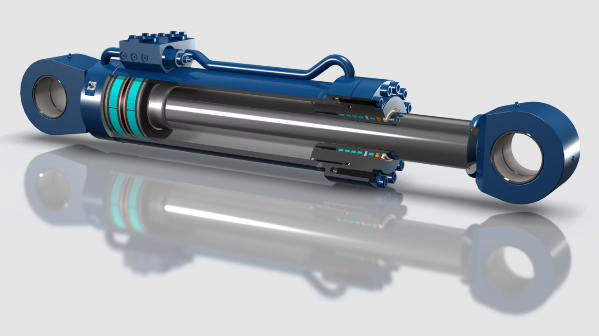
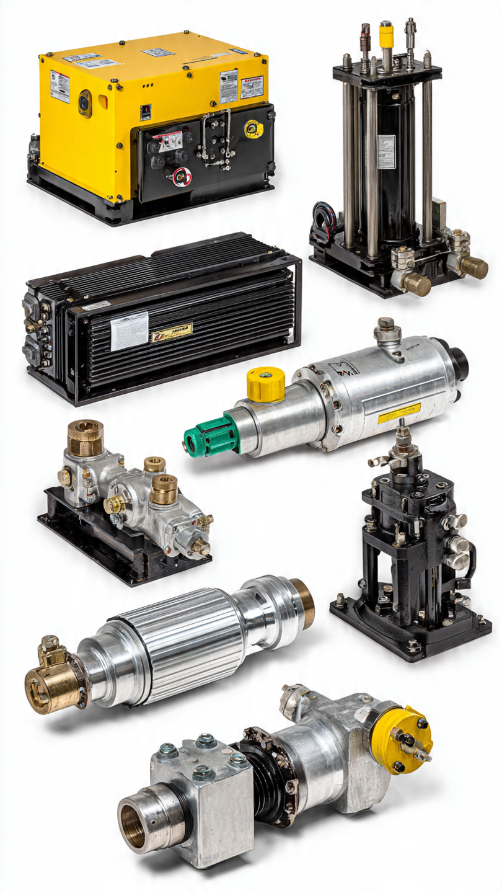
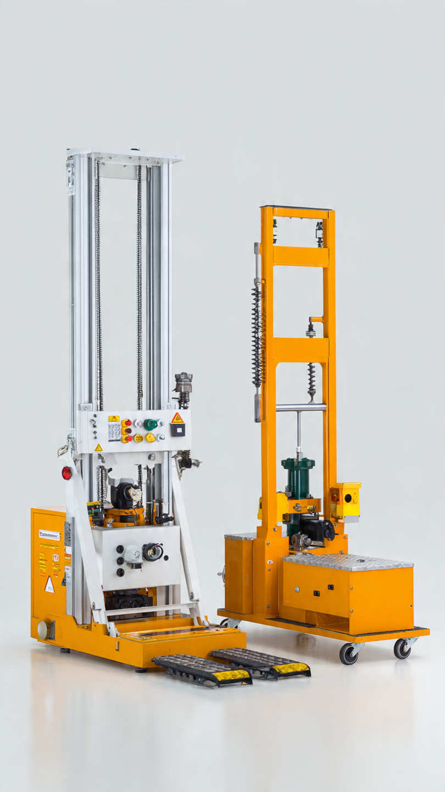
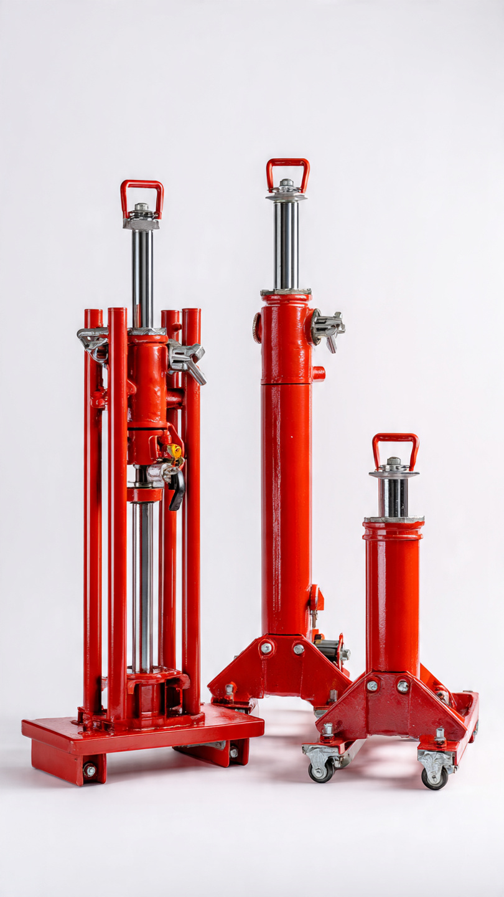
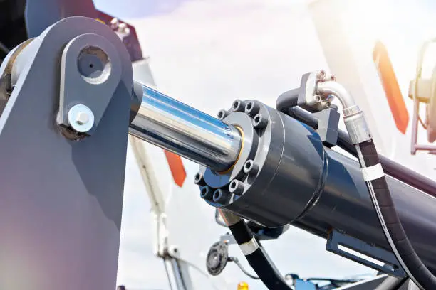
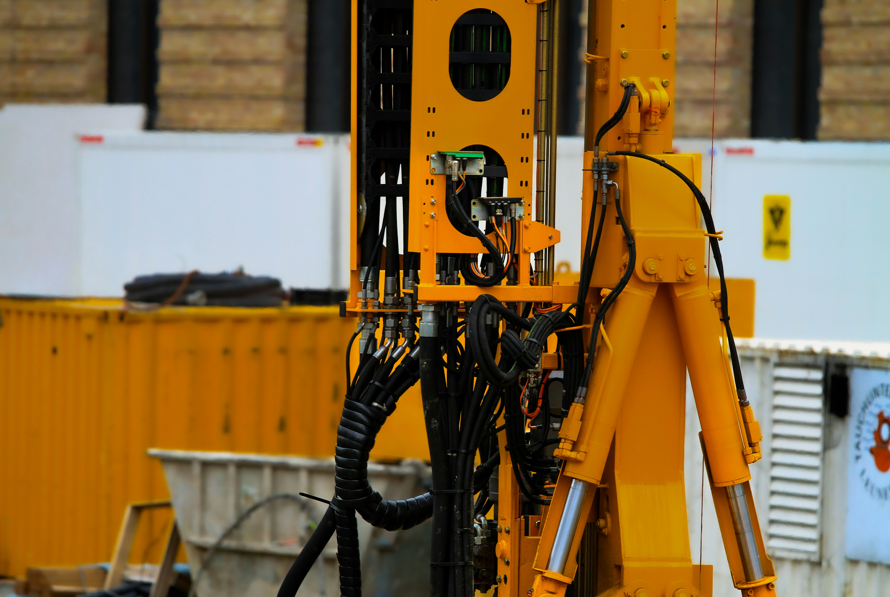

Reliable Hydraulic Engineering Solutions
Reliable Hydraulic Repairs & Service in Johannesburg
Request A Quote 📞 Call 073 708 4294 💬WhatsApp Us
Danny Hydraulics is a trusted hydraulic engineering company with over 10 years of industry experience, delivering reliable, high-quality hydraulic solutions to clients across the industrial, mining, construction, agricultural, and manufacturing sectors. We specialize in hydraulic system installation, maintenance, fault finding, repairs, hose manufacturing, cylinder refurbishment, pump and motor repairs, and custom hydraulic engineering solutions. At Danny Hydraulics, we believe in building lasting relationships through exceptional workmanship, honest communication, and dependable service. Whether it’s routine maintenance, emergency breakdown support, or a complete hydraulic system installation, we are dedicated to delivering solutions that meet the highest standards of quality and safety. Our Mission is to provide innovative, reliable, and cost-effective hydraulic engineering solutions that keep our clients’ operations running efficiently. Our Vision is to become one of South Africa’s leading hydraulic engineering companies, recognized for excellence, integrity, innovation, and outstanding customer service.




Expert repair services for hydraulic cylinders, pumps, motors, valves, power packs, and hoses. We diagnose faults quickly and restore equipment to optimal performance, minimizing costly downtime.
Preventative maintenance programs designed to extend equipment life. Services include oil analysis, system inspections, leak detection, pressure testing, component replacement, and performance optimization.
Supply and manufacture of high-quality hydraulic hoses and fittings. We provide custom hose assemblies, replacements, and emergency hose repairs to keep your machinery operating efficiently.
Complete hydraulic cylinder rebuilding, resealing, rod replacement, machining, and testing services to restore cylinders to reliable working condition.
Fast-response on-site hydraulic troubleshooting and repair services throughout Johannesburg and surrounding areas. Our technicians come directly to your site to reduce downtime and get your equipment back to work quickly.
Professional design and installation of complete hydraulic systems for industrial, mining, construction, and agricultural equipment. We ensure safe setup, proper calibration, and long-term reliability for maximum performance.



Phone/WhatsApp: 073 708 4294
Email: Ddeduce@icloud.com
Serving Areas: South Africa & Africa